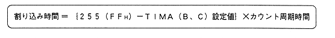

The timer starts counting immediately after the set value is transferred to "TIMA ", "TIMB", and "TIMC". When this count value reaches FFH, an interrupt is generated by the timer that is enabled for interrupts (disable the interrupt when the timer is not used).